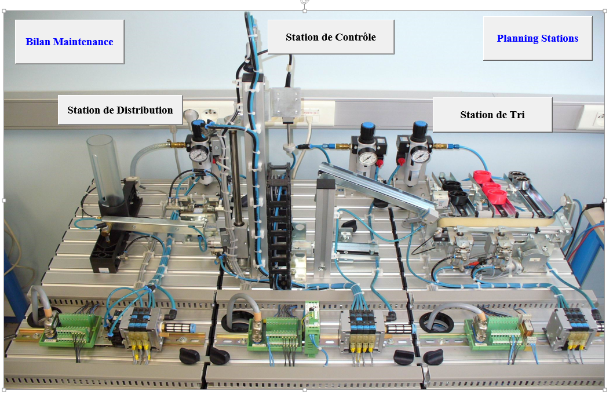
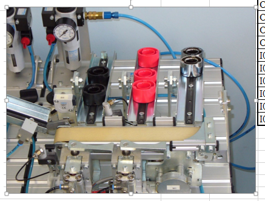

Automatisme Projet de BUT GEII
Ligne de tri automatisée
Diagnostiquer, vérifier et maintenir un système automatisé de triage, de stockage et de distribution de pièces.
- Diagnostic
- Maintenance
- Automatisme

Suivre une pièce sur la ligne
Le banc réunit des stations de distribution, de contrôle et de tri. Suivre le parcours des pièces entre ces stations aide à localiser les défauts de fonctionnement et à remettre le système en conformité.
Documentation du projet

